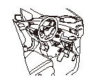

アクセル ペダル ポジション センサの点検
•
この点検は、アクセル ペダル ポジション センサ全閉位置の異常を点検する手順である。
•
全閉位置以外の異常に関しては、DTCを検知するため、この点検手順には含んでいない。
•
点検を行う前にDTCを確認し、DTCが表示されていた場合は、表示されたDTCの故障診断を行う。
運転席左側にあるデータ リンク カプラ（A）にHondaダイアグノスティック システム（HDS）を接続する。
イグニッション スイッチをON（
II
）にする。
アクセル ペダルから足を離した状態で、データ リスト内のAPセンサをHDSで確認する。
•
表示が0%を示す場合は、アクセル ペダル ポジション センサは正常である。
•
表示が0%ではない場合は、
アクセル ペダルAssy.を交換する。
